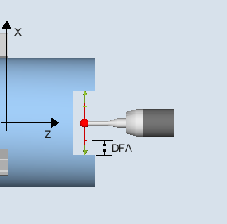
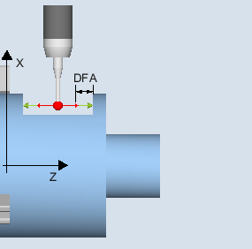
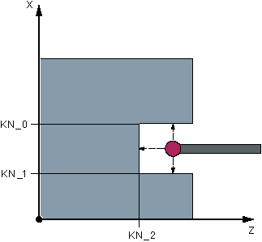
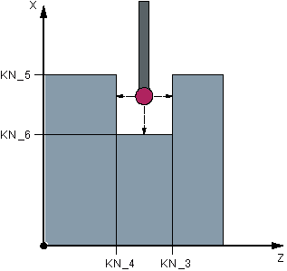

Only applies on turning machines without the milling technology.
Using this measuring variant, a workpiece probe with cutting edge position SL=7 or SL=8 can be calibrated in a reference groove machine-related in the axes of the plane. The measuring probe length or the probe sphere radius can be determined with the calibration.
With the radius determination, a calibration is possible in one direction or in opposite directions of an axis. It is also possible to determine the positional deviation (skew) of the probe and the effective diameter of the probe sphere during calibration in opposite directions.
The measured switching positions of the workpiece probe in the parameterized axis are taken into account together with the machine-related data of the selected calibration groove. From this data, the trigger points are calculated in the positive and negative directions as well as the position deviation in this axis and the effective probe sphere diameter. The trigger points always refer to the center of the probe sphere (TCP).
The probe moves in the selected measuring axis in both directions in the calibration groove.
|  Calibrate: Probe in groove (CYCLE973), |  Calibrate: Probe in groove (CYCLE973), |
The workpiece probe must be called as tool with the associated tool offset.
The machine-related geometrical dimensions of the selected calibration group must be saved before calibration in the corresponding general setting data.
|  Geometry of the calibration groove, |  Geometry of the calibration groove, |
Calibration groove | General setting data | Description |
|---|---|---|
KN_0 | SD54621 $SNS_MEA_CAL_EDGE_PLUS_DIR_AX2 | Calibration groove edge in the positive direction of the 2nd measuring axis |
KN_1 | SD54622 $SNS_MEA_CAL_EDGE_MINUS_DIR_AX2 | Calibration groove edge in the negative direction of the 2nd measuring axis |
KN_2 | SD54615 $SNS_MEA_CAL_EDGE_BASE_AX1 | Calibration groove base of the 1st measuring axis |
KN_3 | SD54617 $SNS_MEA_CAL_EDGE_PLUS_DIR_AX1 | Calibration groove edge in the positive direction of the 1st measuring axis |
KN_4 | SD54618 $SNS_MEA_CAL_EDGE_MINUS_DIR_AX1 | Calibration groove edge in the negative direction of the 1st measuring axis |
KN_5 | SD54620 $SNS_MEA_CAL_EDGE_UPPER_AX2 | Upper calibration groove edge of the 2nd measuring axis |
KN_6 | SD54619 $SNS_MEA_CAL_EDGE_BASE_AX2 | Calibration groove base of the 2nd measuring axis |
The starting position should be selected so that the selected workpiece probe can be positioned in the shortest possible distance, collision-free, with paraxial movements, in the reference groove corresponding to the active cutting edge position.
When calibration with one calibration direction has been completed, the probe is positioned at the measurement distance (DFA) from the calibration surface. For calibration with two calibration directions, the probe is located at the start position after completion of the measuring operation.
See also:
Calibrate: probe in groove (CYCLE973)